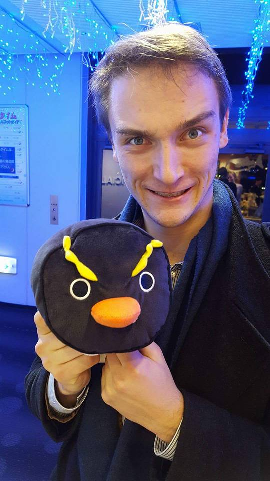

I am a first-year PhD student at Cornell interested in solving theoretical problems of industrial relevence. My interests include language design, algebra, graph theory, formal verification, and linguistics.
I just graduated from Pomona College where I wrote my mathematics thesis with Michael Greenberg on Finite-Trace Temporal Logic and Temporal Netkat.
News
- 5/23 -- Talked about my work on LTLf and Temporal NetKAT at Cornell's PLDG
- 4/15 -- Officially decided to attend Cornell for my PhD
- 4/12 -- Submitted Thesis Manuscript!
- 4/7 -- Thesis Presentation, Done!
- 3/15 -- PhD CSE Visit Day at UCSD
- 3/7 -- PhD CS Visit Day at Princeton University
- 3/2 -- PhD CIS Visit Day at University of Pennsylvania
Research Projects
- Temporal NetKat
- Finite-Trace Temporal Logic
- Kleene Algebras with Tests
Publications
- Infiniteness and Linear Temporal Logic. Eric Campbell. Pomona College. May 2017. [Undergraduate Thesis]
- Constructing Integer Matrices with Integer Eigenvalues. Christopher Towse and Eric Campbell. The Mathematical Scientist, UK. June 2016.
Teaching
- Spring 2017 -- TA for Databases
- Fall 2016 -- TA for Programming Languages at Pomona (helped with course design and auto-graders
- Spring 2016 -- Head TA for Intro CS at Pomona
- Fall 2015 -- TA for Intro CS at Pomona